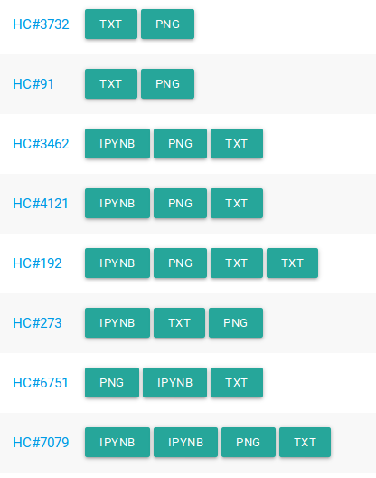
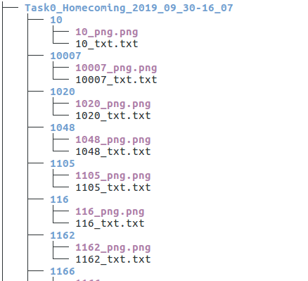

Directory Structure¶
When downloading submission items, gradefast follows a convention to name and save files. The information embedded in the directory strucutre is used again when repopulating a submission group object, given the download directory path.
When you are testing your auto-eval scripts and you don’t have a url (page) to download submissions from, you may have to create directory structure by hand, so that gradefast can use that information to populate a submission group object. For this reason, it is necessary to know the conventions.
Following are the conventions:
Root folder can be named anything
e.g. 'task0', 'mocking_bot_task1' or 'anything'The root folder can contain a .json file, typically named submission.json.
Folders inside of root folder should be numbers which indicate team_id (or student_id).
e.g. '4', '1181', '777'All the team (or student) data should go inside of this folder.Files should be named <team_id>_<file-item-name>.<file-extension>.
e.g. '7_zip.zip', '926_png.png', '86_zip2.zip', '413_txt3.txt'Unzipped folders are named as <team_id>_<file-item-name>_unzipped
e.g. '7_zip.zip' becomes '7_zip_unzipped' and '86_zip2.zip' becomes '86_zip2_unzipped'
Below are some examples of file items and the directory they should make when present locally on disk.
Example 1¶
Note that we only downloaded png and txt files in this case.
 